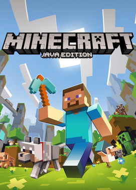

Minecraft Java Edition - PC
Minecraft para PC es el videojuego más vendido de todos los tiempos. Solo eso debería ser suficiente para convencerte. Pero veamos un poco más de información acerca de por qué deberías empezar a disfrutar de este juego ahora mismo. Se trata de un juego de tipo ‘sandbox’ en el que los jugadores deben minar, construir y fabricar su propio mundo ideal.
Acerca del Juego
La premisa del juego es ridículamente simple: comienzas tu aventura con nada más que tus manos y un inventario limitado. A partir de esto, debes comenzar a minas para reunir materiales que luego utilizarás para fabricar herramientas y construir casas y otros edificios.
Los recursos que puedes encontrar van desde los más comunes hasta los súper raros, y a menudo los productos más raros y valiosos son los más difíciles de conseguir, requiriendo de minería profunda e incluso de la construcción de túneles reforzados para evitar que desbordamientos de agua o deslaves de rocas te retrases.
No hay ninguna historia a seguir: el desarrollo del juego depende completamente de ti y de lo que desees lograr. Puedes optar por construir ciudades, o una mansión rural, puedes criar ovejas o ir de pesca. El juego es exactamente lo que tú y tu imaginación quieren que sea.
Algunas de las hazañas más famosas hechas en Minecraft
Si deseas ver algunos ejemplos de lo que se puede hacer en el juego, los siguientes son fáciles de encontrar mediante búsqueda rápida en Google:
Algunos consejos para divertirse con el juego
No hay instrucciones acerca de cómo crear y fabricar objetos dentro del juego, pero hay un gran número de guías wiki y tutoriales en línea con los que podrás apoyarte. Encuentra un par de sitios que tengan toda la información que necesites y mantén las pestañas abiertas mientras en tu navegador juegas para que no pierdas demasiado tiempo si olvidas cómo crear algún elemento específico o necesitas un poco de información sobre qué hacer en algún momento dado.
¡Cuídate de los Creepers! Estas criaturas escurridizas se te acercarán sigilosamente (de ahí su nombre) haciendo un silbido corto (sólo lo suficiente audible para asustarte, pero no lo suficiente para que puedas huir) y luego estallando, matándote y dañando cualquier cosa que se encuentre en las cercanías.
Ten en cuenta que, si consigues matar a un Creeper antes de que él te atrape, este podría dejar caer perlas de experiencia que son valiosas y que debes recolectar de inmediato.
Otros monstruos que pueden aparecen son arañas, esqueletos, zombis, brujas, limos, una criatura de aspecto oscuro llamada Enderman, o criaturas más pequeñas llamadas endermites, entre otras. ¡Cada uno de estos enemigos puede ser derrotado a su manera, y aprender a hacerlo puede requerir una curva de aprendizaje empinada y apasionante!
Los animales y los monstruos son llamados "mobs". No porque se amontonen a tu alrededor (aunque sí pueden hacerlo), sino por ser la abreviatura de “móvil”, haciendo referencia a su habilidad para moverse, ¡e incluso alejarse por completo si vas tras ellos rápidamente!
Modos de Juego
Modo Supervivencia: repleto de enemigos, este es un nivel emocionante y apasionante para jugar si estás buscando pasar el rato con algo de emoción.
Modo Creativo: perfecto para aquellos que quieren construir y ver hasta dónde pueden llevar su imaginación. ¡El mundo es tuyo para que lo moldees a tu manera!
Minecraft para PC está disponible para su compra en Instant Gaming por una fracción de su precio de venta al público. Recibirás una clave oficial y podrás disfrutar del juego en cuestión de segundos. Play smart. Pay less.